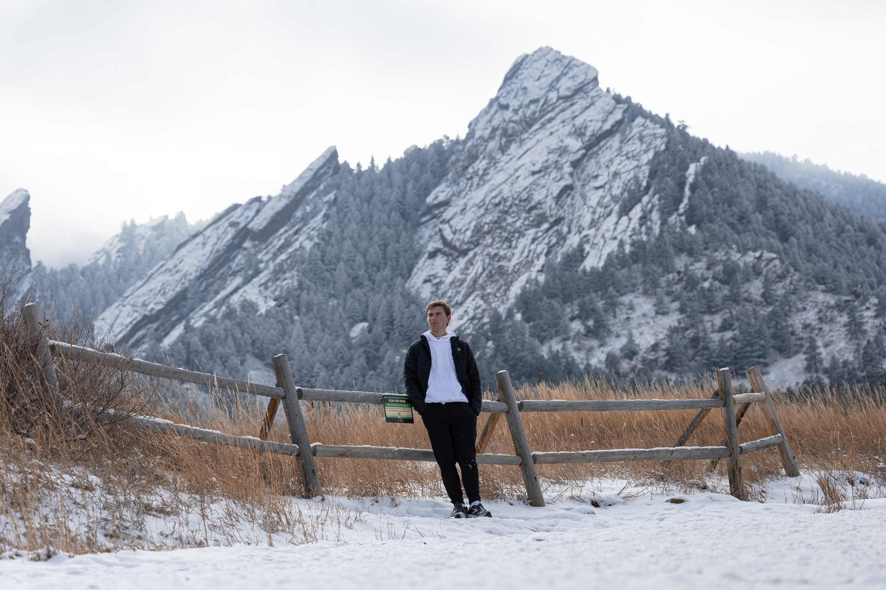
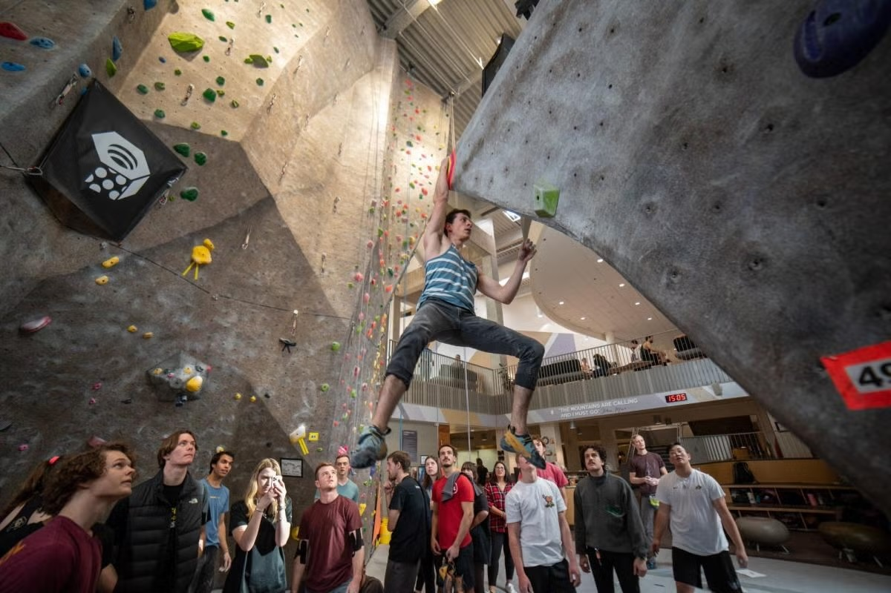

Skiing
I grew up in Park City Utah which is famous for its snow and skiing. I have spent many years of my life learning how to ski and even competing in racing events! Skiing is still something I do today and love.

Photography
I had always been interested in photography and for the past 4ish years I had been taking photos of everything I could. Around 2 and a half years ago I got my first camera and this allowed me to hone my craft and learn more techniques with what I photograph.

Free Diving
Even though I am from a land locked state, I love freediving and taking photos under the water. The photo here is one I took ~60 feet under the water in which I waited around 20 seconds for the Garaboldi to come to me. Any chance I get I try and go diving and hope to one day to be able to take more photos underwater!

Climbing
At the start of my Freshman year, I wanted to take up a sport and do something that would be fun and a good exercise. So a friend of mine and I got into rock climbing a the Rec center here at CU Boulder. From humble beginnings of barely being able to do a v2 to getting close to finishing a v7 is something I thought wouldn't be possible!